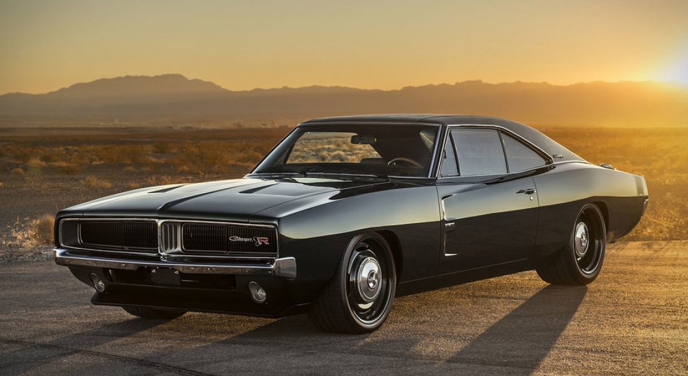
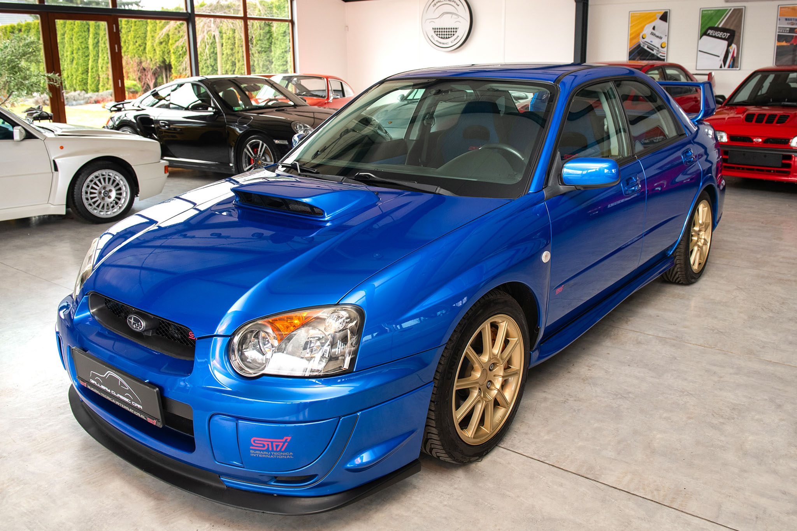
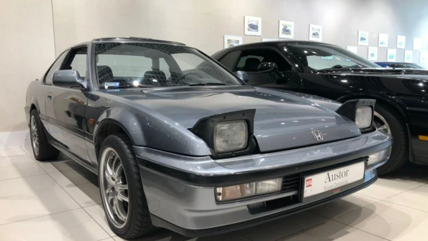
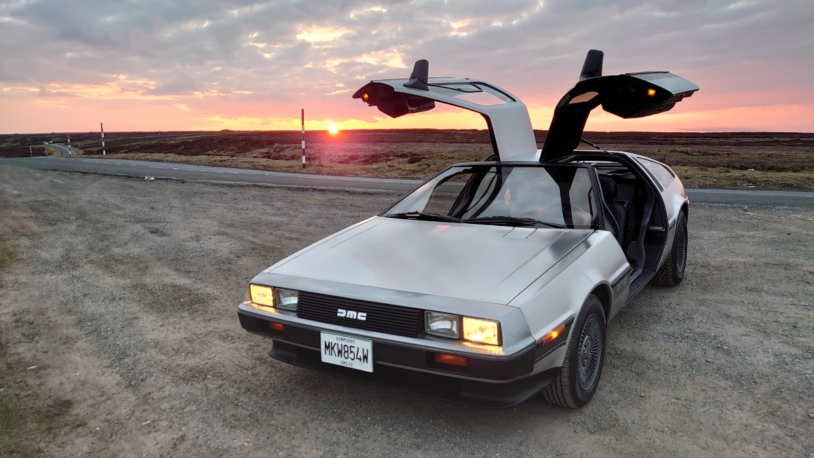

Na tej stronie chciałem ukazać wszystkie auta, które lubię i które według mnie wyróżniają się na tle innych.
O stronie
Wybrane samochody

Dodge Charger 1970
Według mnie jeden z ładniejszych muscle car których już się nie produkuje.

Subaru Impreza WRX STI
Cywilna wersja rajdowej Imprezy z zwięksoznymi osiągami.

Honda Prelude III
Auto z pięknym wyglądem.

Delorean DMC-12
Auto które zna chyba każdy.
Porównanie modeli
| Model | Kraj | Typ | Cechy |
|---|---|---|---|
| Dodge Charger 1970 | Ameryka | Pony car | Napęd na tylną oś. Silnik V8 ok 400KM (zależy od wersji). |
| Subaru Impreza WRX STI | Japonia | Sportowy samochód osobowy | Stały napęd na cztery koła. Benzynowy, turbodoładowany najczęściej 300KM. |
| Honda Prelude III | Japonia | 2-drzwiowe sportowe coupe | Napęd na przednią oś. Benzyna 2 litry 109 do 150KM. |
| Delorean DMC-12 | Irlandia Północna | Dwuosobowy samochód sportowy | Napęd na tył. Silnik 2,8 litra 130-132KM. |
Najważniejsze informacje
Minusy aut sportowych
- Dużo palą
- Duże gabaryty
- Drogie części
- Starsze modele ciężej dostępne
Plusy aut sportowych
- Duża prędkość
- Ładny wygląd
- Przyciągają wzrok
- Policja nie ma szans
Przydatne linki
Linki do oficjalnych stron niektórych firm.
Multimedia
A tutaj próbki dźwięków tych czterech maszyn